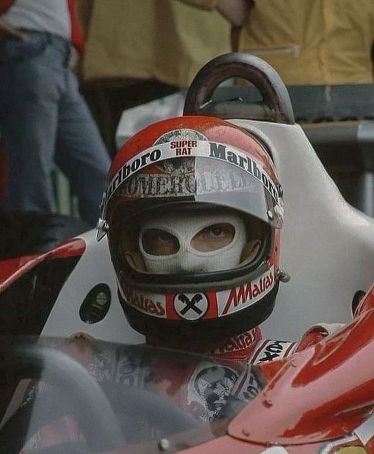
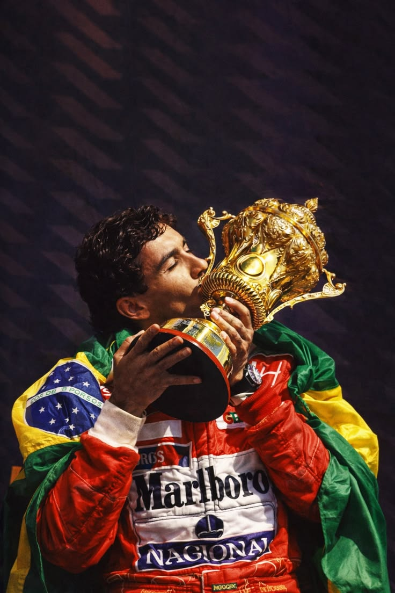
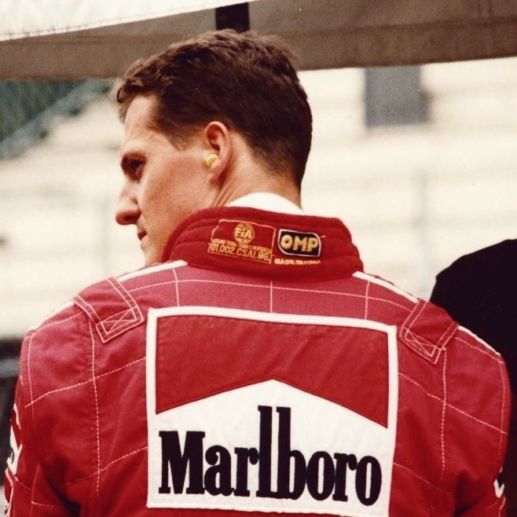
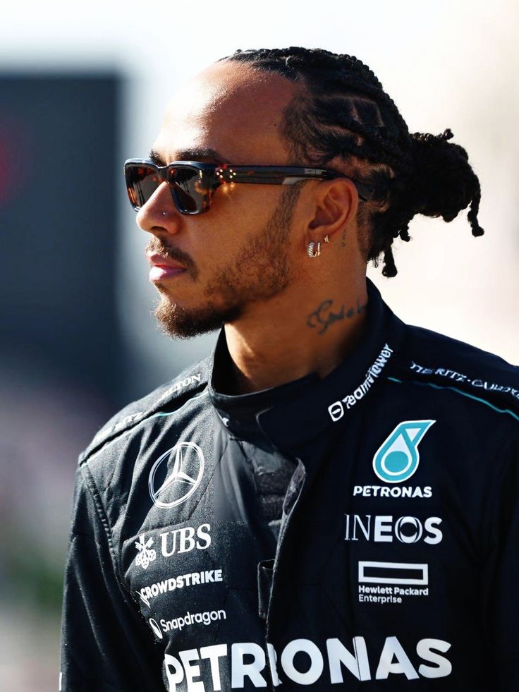
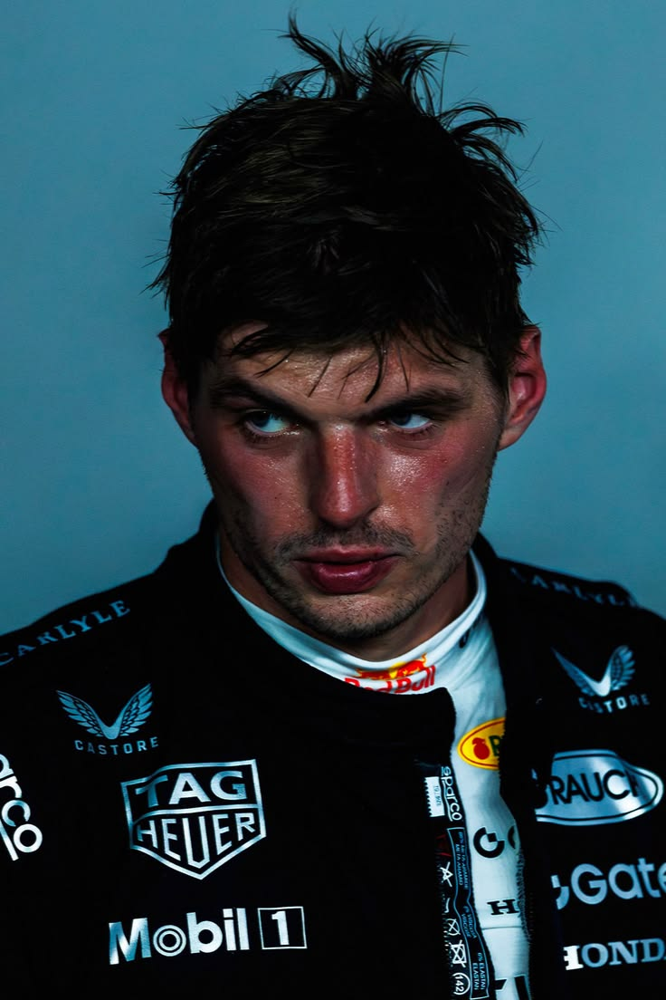

Conoce a los pilotos que marcaron una era

Cincuenta segundos en el fuego deformaron su cuerpo, pero no su voluntad. Tras sobrevivir al infierno de 1976, Niki Lauda desafió a la medicina y a la lógica regresando a la pista en solo seis semanas, con el casco empapado en la sangre de sus quemaduras. Aquella resurrección quirúrgica marcó el fin de una era suicida: Lauda obligó a la Fórmula 1 a valorar la vida sobre el espectáculo, cambiando el destino del deporte para siempre

El 1 de mayo de 1994, el tiempo se detuvo en Tamburello. El choque fue instantáneo; el vacío, eterno. La muerte del piloto más puro y místico de la historia no solo destrozó los corazones de millones, sino que rasgó el velo de la complacencia en la Fórmula 1. Su partida fue un sacrificio devastador que obligó al deporte a renacer desde las cenizas de Imola: de su tragedia brotó la obsesión absoluta por la seguridad, salvando incontables vidas en el futuro. Senna no murió en la pista; se volvió inmortal

Michael Schumacher no solo ganaba; devoraba a sus rivales con una precisión quirúrgica y una condición física jamás vista. El 'Káiser' llegó a una Scuderia Ferrari sumida en crisis y, a base de genialidad, liderazgo e instinto asesino en pista, construyó el imperio más imponente de la historia con cinco títulos consecutivos. Capaz de marcar vueltas de clasificación en plena carrera y de dominar bajo tormentas imposibles como un dios de la lluvia, Schumacher redefinió para siempre lo que significa ser el piloto perfecto.

La era híbrida de la Fórmula 1 tuvo un dueño absoluto, y su punto más alto llegó en 2018. Lewis Hamilton y Mercedes formaron la alianza más letal del automovilismo moderno, uniendo un ritmo de carrera asfixiante con una precisión milimétrica en cada frenada. Lewis redefinió los límites del deporte al romper el récord histórico de poles y encadenar campeonatos con una facilidad pasmosa. En su mejor momento, su manejo fluía como el agua sobre el asfalto: suave, estético, pero destructivo para las esperanzas de cualquier rival que intentara arrebatarle la corona.

Max Verstappen dejó de competir contra la parrilla para empezar a competir contra la historia. Al volante del RB19, 'Mad Max' firmó la campaña más aplastante jamás vista en el automovilismo: 19 victorias en 22 carreras y un récord implacable de 10 triunfos consecutivos. Su prime no fue solo una muestra de superioridad técnica, sino una exhibición de perfección mental donde lideró más de mil vueltas en un solo año, transformando cada Gran Premio en un monólogo de velocidad, precisión y una voracidad insaciable que redefinió los límites de la Fórmula 1.